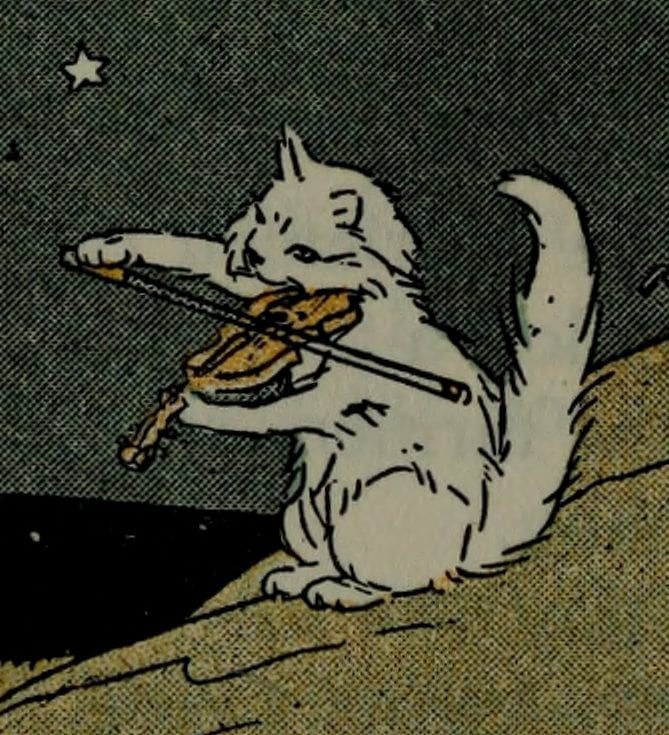
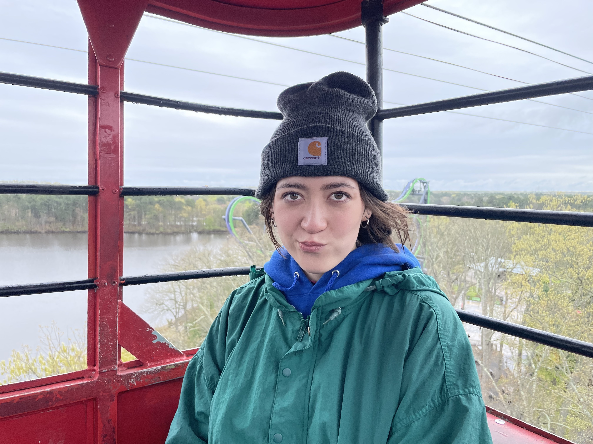

Hannah page for Hannah
This page was generated from Wes' File Structure Template Repo.
look at this perfect violinist.
This is a secondary heading.
Not ready to go crazy yet... but check out the passage below!
Introducing: Hannah Hodor
I am a third-yeard transfer at UCSC pursuing a double major in studio art and philosophy.
I'm a Los Angeles native who enjoys going to the beach, hiking, spending time ith friends, and exploring art.